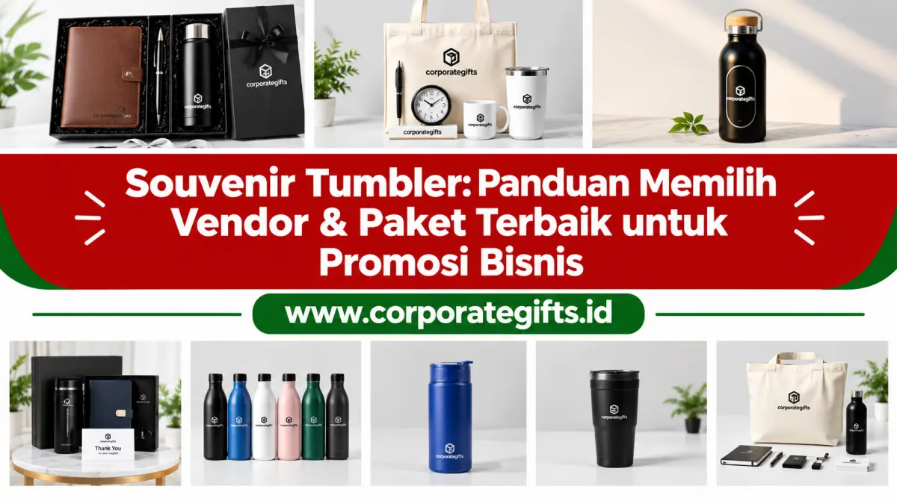

Corporate Gifts ID - Souvenir tumbler adalah botol minum custom berlogo perusahaan yang dibagikan sebagai merchandise promosi untuk meningkatkan brand awareness dan loyalitas pelanggan. Pilihan terbaik untuk bisnis adalah tumbler stainless steel SUS 304 food grade dengan logo laser engraving, yang dipesan dari supplier tumbler promosi berpengalaman dengan MOQ 50 hingga 100 pcs dan estimasi waktu produksi 7 hingga 14 hari kerja.
Di era persaingan bisnis yang dinamis, strategi promosi perusahaan tidak lagi cukup hanya mengandalkan iklan konvensional di media sosial atau media cetak. Tumbler custom berlogo perusahaan akan dibawa bepergian dan dipakai setiap hari oleh penerimanya, sehingga berfungsi sebagai media promosi bergerak yang subtil namun memberikan dampak ingatan brand yang sangat kuat.
Namun, memilih jenis tumbler dan mitra vendor yang kredibel kerap menjadi tantangan tersendiri bagi divisi pengadaan dan HRD. Panduan lengkap ini mengupas tuntas pilihan material terbaik, ragam teknik kustomisasi cetak logo, hingga langkah seleksi supplier tumbler terpercaya untuk kebutuhan bisnis Anda.
Poin Kunci Souvenir Tumbler Promosi:
- Nilai Guna Harian: Memiliki masa pakai panjang dan dibawa ke kantor, gym, maupun perjalanan dinas luar kota.
- Material Unggulan: Stainless steel SUS 304 food grade menjamin minuman tetap higienis dan suhu tahan hingga 12 jam.
- Dukungan Kampanye ESG: Mendorong gaya hidup bebas sampah plastik sekali pakai (zero single-use plastic).
- Teknik Grafir Permanen: Laser engraving memberikan tampilan logo yang sangat awet, mewah, dan tidak dapat terkelupas.
- Skalabilitas Pesanan: Fleksibel untuk pesanan VIP skala 50 pcs hingga pengadaan massal ribuan pcs untuk seminar nasional.
Apa Itu Souvenir Tumbler dan Fungsinya untuk Bisnis?
Souvenir tumbler adalah wadah minum reusable (dapat dipakai ulang) yang dicetak dengan logo, nama, atau pesan korporat, lalu diberikan kepada klien, karyawan baru, atau peserta acara resmi. Berbeda dengan brosur atau flyer promosi yang sering kali cepat dibuang, tumbler merupakan barang utilitas nyata yang dipakai berulang kali dalam aktivitas harian.
Dalam praktiknya, souvenir ini sangat populer dibagikan pada agenda seminar korporat, workshop pelatihan profesional, gathering tahunan kantor, paket welcome kit onboarding karyawan, hingga bingkisan penghargaan untuk para relasi bisnis penting.
Mengapa Souvenir Tumbler Menjadi Pilihan Cerdas untuk Promosi?
Tumbler custom terus menduduki peringkat teratas dalam daftar produk souvenir kantor terfavorit berkat perpaduan keunggulan fungsional dan nilai branding jangka panjang:
- Nilai Guna Tinggi: Bermanfaat nyata bagi penerimanya, baik untuk klien VIP maupun peserta seminar umum, sehingga terhindar dari risiko terbuang percuma.
- Media Promosi Jangka Panjang: Logo brand terpampang setiap kali penerima meminum kopi atau air di meja kerja, menghasilkan impresi visual berkelanjutan dengan biaya per impresi (cost per impression) yang sangat rendah.
- Mendukung Gerakan Ramah Lingkungan: Mendorong pengurangan limbah botol plastik sekali pakai, sekaligus memperkuat reputasi perusahaan sebagai entitas bisnis yang peduli kelestarian bumi dan prinsip ESG.
- Fleksibilitas Desain dan Personalisasi: Menawarkan ruang kustomisasi souvenir tumbler yang sangat luas, mulai dari varian warna bodi, tutup anti-bocor, hingga grafir laser nama personal penerima.
Jenis-Jenis Souvenir Tumbler Populer di Pasaran
Memahami karakteristik material akan membantu Anda menentukan pilihan produk yang paling selaras dengan profil penerima dan batas anggaran pengadaan. Sebagai distributor terpercaya, CorporateGifts.ID menyediakan empat kategori tumbler terpopuler:
1. Tumbler Stainless Steel (SUS 304 Food Grade)
Pilihan premium paling diminati di kalangan korporat. Material ini berdaya tahan luar biasa, anti korosi, dan dilengkapi dinding ganda vakum (double-wall vacuum insulation) yang mampu menjaga suhu panas maupun dingin hingga belasan jam. Sangat cocok untuk gift set direksi, bingkisan mitra VIP, maupun suvenir akhir tahun perusahaan.
2. Tumbler Plastik (BPA-Free)
Solusi ekonomis untuk acara berskala massal dengan alokasi anggaran fleksibel. Tersedia dalam beragam pilihan warna cerah, bobot ringan, dan telah teruji bebas zat berbahaya BPA. Ideal dibagikan pada kegiatan jalan sehat, family gathering akbar, atau seminar mahasiswa.

Pilihan material tumbler stainless steel food grade dengan grafir laser presisi.
3. Tumbler Aluminium Ringan
Tumbler aluminium memiliki bobot yang jauh lebih enteng daripada stainless steel namun tetap mempertahankan impresi solid dan kokoh. Kategori ini kerap dipilih untuk event bertema petualangan, olahraga outdoor, atau komunitas otomotif.
4. Smart Tumbler dengan Indikator Suhu LED
Dilengkapi layar sentuh LED pada bagian tutup botol yang secara otomatis menampilkan derajat temperatur air di dalamnya secara real-time. Hadiah ini menghadirkan nuansa teknologi modern yang sangat diminati instansi perbankan dan perusahaan fintech.
Teknik Kustomisasi Logo pada Tumbler
Kualitas aplikasi logo memegang peranan krusial terhadap persepsi penerima. Di workshop CorporateGifts.ID, kami mengaplikasikan tiga metode cetak standar industri modern:
- Laser Engraving (Grafir): Sinar laser presisi tinggi mengikis lapisan cat permukaan logam untuk menampilkan kilau dasar stainless steel. Hasil grafir bersifat permanen seumur hidup, tahan gores, dan memberikan impresi eksklusif yang tenang (subtle).
- Sablon Presisi: Pilihan paling ekonomis untuk mereproduksi logo solid satu hingga dua warna pada pesanan berjumlah besar.
- Digital UV Printing: Mampu mencetak logo multi-warna (full color) dengan gradasi rumit dan detail tajam. Cat mengering seketika di bawah sinar ultraviolet, menghasilkan daya rekat superior yang tidak mudah pudar.
Bagaimana Cara Memilih Vendor Souvenir Tumbler yang Tepat?
Memilih mitra produksi yang kredibel adalah kunci kelancaran agenda perusahaan Anda. Tabel perbandingan berikut merangkum panduan evaluasi opsi tumbler dan kriteria vendor yang wajib diperhatikan:
| Tipe Tumbler | Material & Sertifikasi | Metode Cetak Terbaik | Rekomendasi Penggunaan Acara |
|---|---|---|---|
| Executive Tumbler | SUS 304 Stainless, Double Wall Vacuum | Laser Engraving (Grafir) | Hadiah VIP, Direksi, Anniversary Perusahaan |
| Smart LED Tumbler | SUS 304 + Sensor LED Touchscreen | Laser Engraving / Print UV | Welcome Kit Onboarding, Seminar Fintech |
| Sport Bottle Tumbler | Aluminium Alloy / Plastik Tritan BPA-Free | Sablon Presisi / Print UV | Family Gathering, Kegiatan Komunitas Outdoor |
| Eco Bamboo Tumbler | Inner SUS 304 + Outer Serat Bambu Alami | Laser Engraving Kayu Alami | Campaign Keberlanjutan ESG, Seminar Lingkungan |
Pastikan vendor pilihan Anda menyediakan transparansi sampel fisik sebelum mass production, sanggup memenuhi tenggat waktu (SLA), serta memiliki badan hukum resmi yang jelas untuk kelancaran administrasi invoice dan faktur pajak B2B.
Pertanyaan Seputar Souvenir Tumbler Promosi (FAQ)
Kesimpulan: Maksimalkan Branding Bisnis Lewat Souvenir Tumbler
Memilih souvenir tumbler adalah langkah investasi promosi yang sangat cerdas untuk membangun reputasi merek yang berkelas dan berjangka panjang. Dengan perpaduan bahan baku food-grade, eksekusi cetak grafir yang presisi, serta pengemasan gift box yang elegan, Anda tidak sekadar membagikan merchandise, melainkan menghadirkan representasi nyata dari standar keunggulan korporat.
Sebagai supplier dan distributor souvenir tumbler terpercaya, CorporateGifts.ID siap membantu mewujudkan merchandise promosi terbaik untuk perusahaan Anda. Kunjungi katalog online kami atau hubungi tim konsultan kami hari ini untuk mendapatkan konsultasi dan penawaran harga terbaik.

Ditulis oleh: Vendor Souvenir Kantor
Corporate Souvenir ConsultantSpesialis riset material drinkware, standar higienitas food-grade, dan teknik kustomisasi industri di CorporateGifts.ID. Berpengalaman menangani ribuan pengadaan souvenir kantor dan merchandise korporat di Indonesia.
Lihat Profil Lengkap & Panduan Lainnya